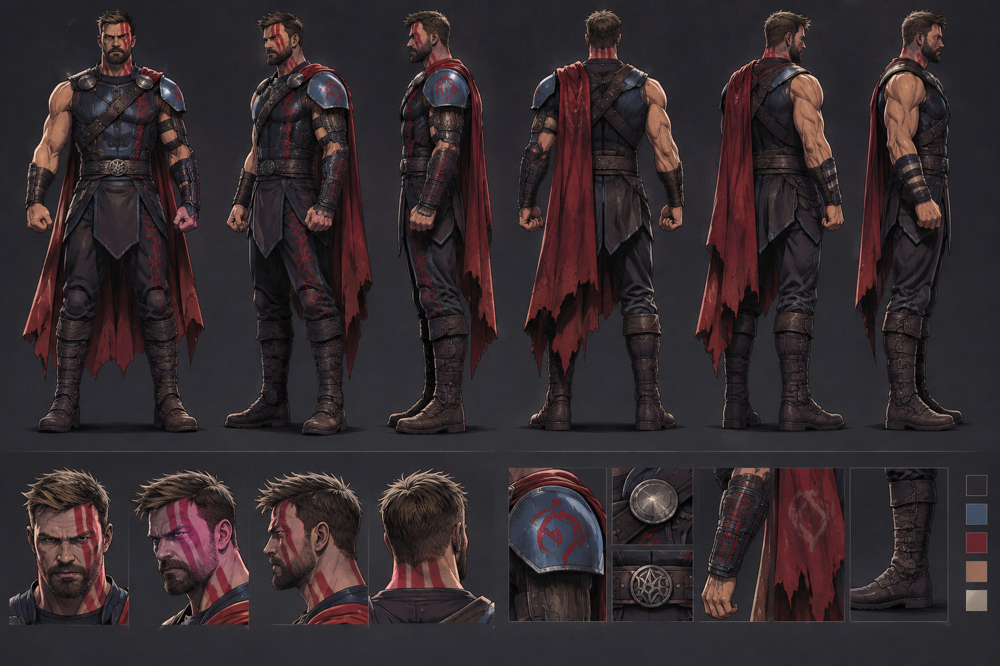
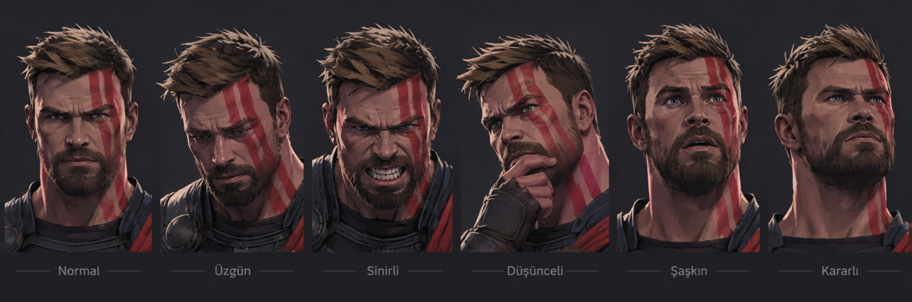
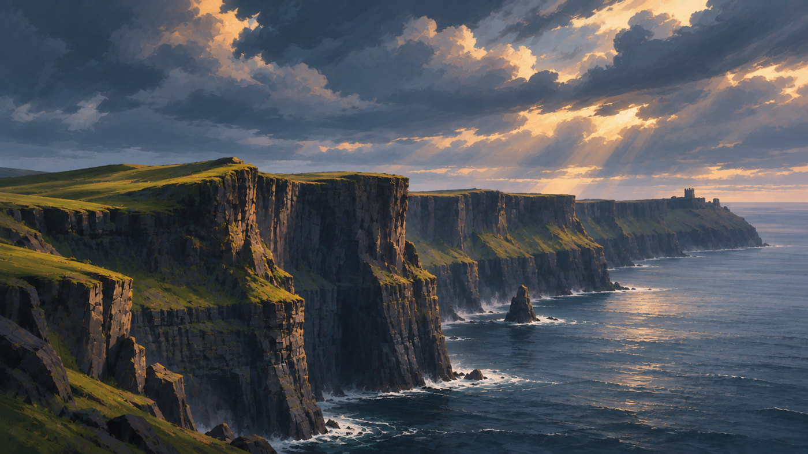
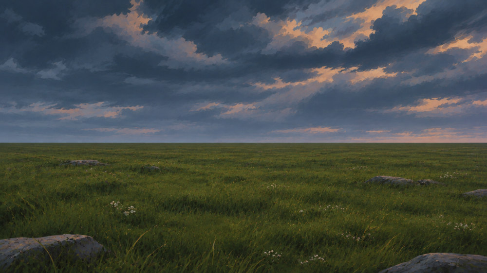

Karakter ve dünya
Tutarlı bir karakter için önce çok açılı tasarım sayfası ve yüz ifadeleri, ardından filmin geçtiği mekânlar üretildi. Bu referanslar her sahnede karakterin ve ışığın aynı kalmasını sağladı.

